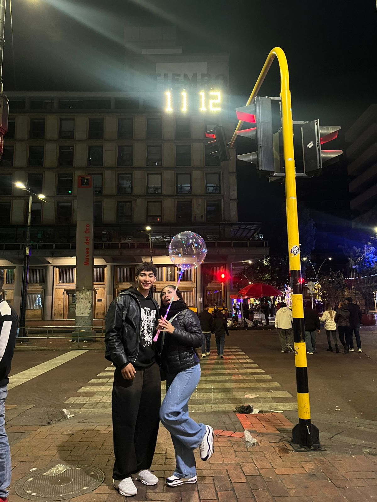

De: Tu santi
Para: El amor de mi alma Sofi
Algunas historias no se planean, simplemente ocurren. Es el arte de coincidir, cuando dos almas se reconocen. Las conexiones verdaderas existen, hay almas que se encuentran incluso después de tanto buscarse, y cuando lo hacen, se reconocen y conectan al instante. Como nosotros dos, mi amor.
Nada fue casualidad. Nada ocurrió por accidente.
Por algo nos encontramos, por algo coincidimos. Por algo, entre tantas personas, decidí acercarme a ti. Por algo mis ojos te buscan, por algo mis latidos dicen tu nombre, por algo mi piel te anhela y mi lealtad te pertenece. Algo hemos de tener, algo hermoso, algo has de ser en mi vida… o quizás, todo.
Cada palabra, cada mirada, cada silencio compartido fue construyendo algo profundo, algo que no se fuerza, pero se siente. Amarte es lo más increíble que me ha pasado. Agradezco cada día tenerte, compartir tus abrazos, tus risas y tu calma. Amo cómo me haces sentir, la paz de estar a tu lado, abrazarte fuerte, besarte despacio y perderme en ti. Amo cada detalle tuyo, tu risa, tu voz, tu forma de quererme. Te amo más profundo de lo que alguna vez imaginé.
No fue prisa ni impulso. Fue cariño creciendo con calma, con nervios bonitos y la certeza silenciosa de que nuestras almas estaban empezando a unirse.
01. Porque contigo puedo ser yo, sin máscaras, sin miedo, y aun así sentirme suficiente.
02. Porque tu sonrisa tiene la capacidad de cambiar mis días incluso cuando todo parece pesado.
03. Porque a tu lado el mundo se siente más tranquilo, como si todo encontrara su lugar.
04. Porque contigo entendí que el amor no siempre hace ruido, a veces simplemente se queda.
05. Porque sin buscarlo te convertiste en mi lugar seguro, en mi calma y en mi elección diaria.
05. Porque me enamore de ti Karoll Sofia Cifuentes Ussa, Por que te amo con mi alma. Te elijo a ti, por que eres la mujer con la que lo quiero lograr todo, con la que quiero pasar el resto de mis dias y entregarte todo lo que soy y lo que puedo dar.
No prometo perfección, pero sí intención.
Prometo cuidarte, escucharte y elegirte incluso en los días grises.
Prometo caminar a tu lado, celebrar lo bonito, aprender de lo difícil y construir recuerdos que algún día recordemos sonriendo.
Y sobre todo, prometo que lo nuestro no sea solo un día, sino una historia que valga la pena.